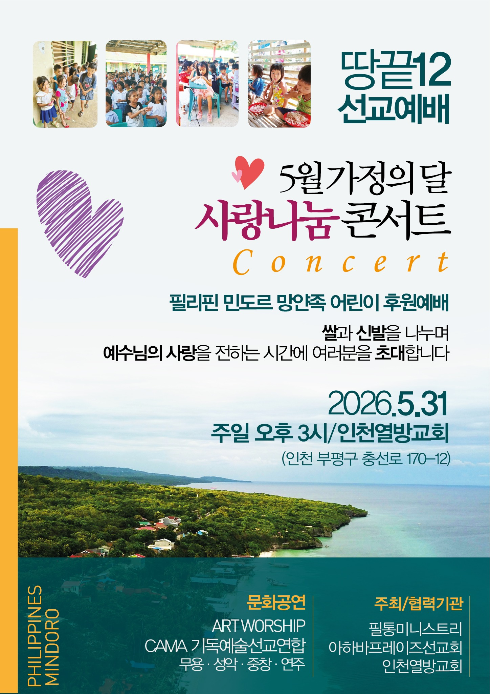
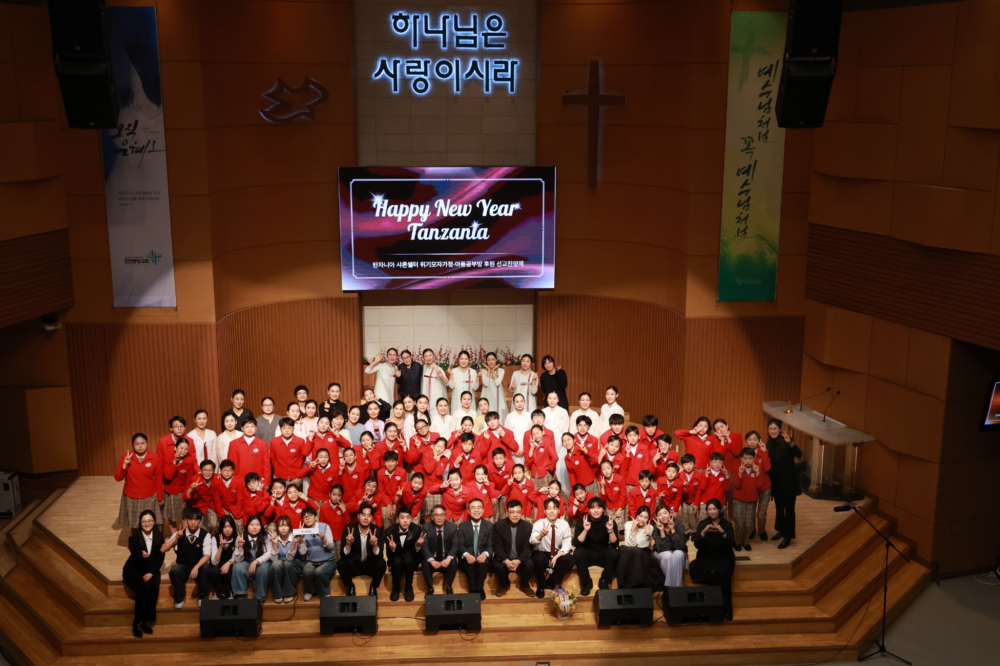
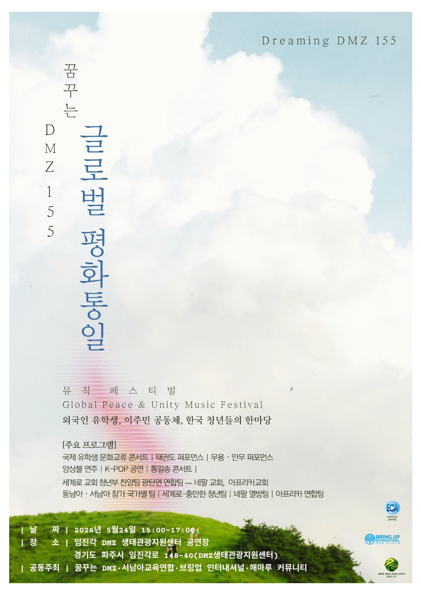
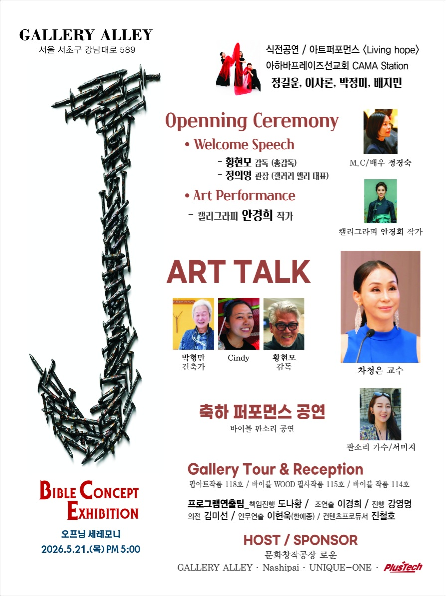

땅끝12 선교예배
5월 가정의 달 사랑나눔콘서트
필리핀 민도로 망얀족 어린이 후원예배로, 쌀과 신발을 나누며 예수님의 사랑을 전하는 시간입니다.
2026. 5. 31 · 인천열방교회함께 예배하고, 예술로 섬기며, 복음을 나누었던 현장의 기록
Event Archive
아하바프레이즈선교연합과 협력 네트워크가 함께한 예술선교 현장을 소개합니다. 각 행사 이미지를 통해 사역의 방향과 실제 현장을 확인할 수 있습니다.

탄자니아 샤론쉘터 위기모자가정·아동 공부방 후원을 위한 선교찬양제입니다. 클릭하면 행사 설명과 사진 자료를 볼 수 있습니다.
2026. 1. 17 · 인천중앙성결교회 HAPPY NEW YEAR TANZANIA 상세페이지 보기 →
예술로 복음을 전하고 연합으로 미래를 열어가는 문화예술선교학교와 기독청년예술연합 YOV:EL의 특별 쇼케이스입니다.
2026. 7. 12 · 오후 6:00 · 명지대학교 미래관 4층 3406호
필리핀 민도로 망얀족 어린이 후원예배로, 쌀과 신발을 나누며 예수님의 사랑을 전하는 시간입니다.
2026. 5. 31 · 인천열방교회
외국인 유학생, 이주민 공동체, 한국 청년들이 함께하는 문화교류와 평화통일 뮤직페스티벌입니다.
2026. 5. 24 · 임진각 DMZ 생태관광지원센터
성경적 메시지를 예술과 퍼포먼스, 아트토크로 나누는 전시 오프닝 세리머니입니다.
2026. 5. 21 · Gallery Alley